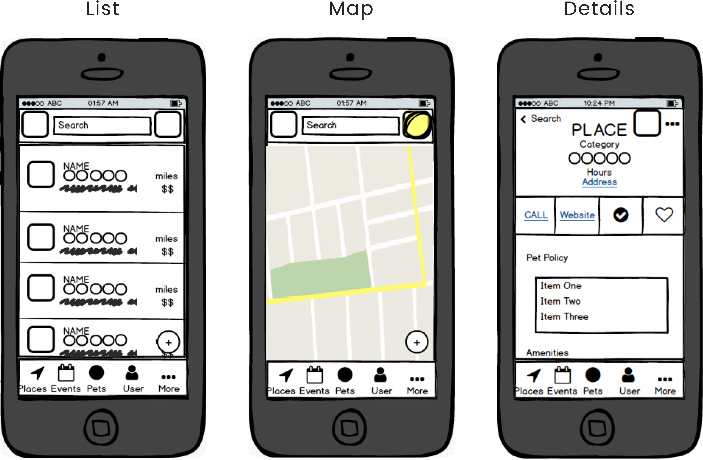
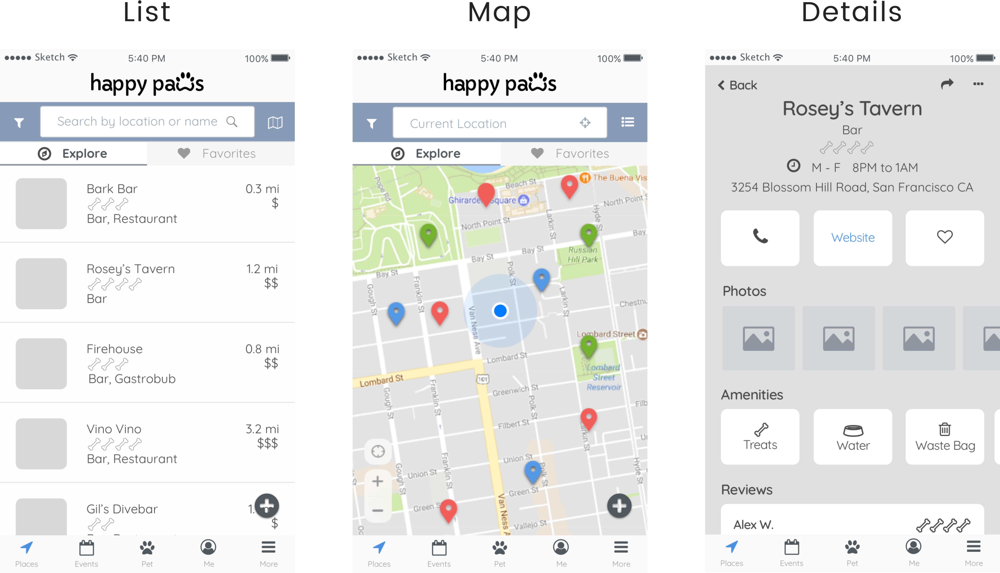

The Overview
The Fur-iendly Mobile App
We spend the bulk of our day away from our pets; why not optimize the time we do spend with them?
HappyPaws is a design challenge that helps people connect and rediscover the dog-friendly world around them.
My Role
I worked on this project as a design student for Bloc’s Designer Track advised by my mentor Terry Million.
I owned end-to-end UX and Product Design conducting research, copywriting, branding, wireframes, usability testing, visual design, and the development of an interactive prototype.
The Challenge
Creating a Meaningful Experience
Inspired by my own experience to find reliable dog information, I was surprised to find the market lacked a multi-functional dog app. Existing applications on the market were either one-dimensional focusing on one task or dog specific information was simply added to existing platforms.
My challenge was to create a product that provided dependable information to all types of dog owners to improve the owner-canine experience.
With a 8-week timeframe, I focused on delivering an interactive high-fidelity iOS mobile prototype that would create a meaningful impact for the owner-pet relationship. I chose to design for mobile because its convenient and simple framework would allow users to quickly find information on the go.
The Research
Understanding What Motivates Users
I studied behaviors and terminology used in dog forums, vet reviews, and competitor applications to help strengthen questions introduced in the user survey. While familiar with some needs of dog ownership, I used surveys to validate questions and assumptions about owner-pet daily activities, relationship, obstacles and frustrations that prevented quality bonding time; and goals users wanted to accomplish in a multi-functional dog app.
Participatory research played a vital role in designing for functionality and emotions. I was able to quickly gathering information from a large dataset and learn key motivations to build a genuine emotional connection.
Discovering Impactful Core Features
In the survey of twenty-two dog owners, 78.9% participants indicated that their dog spent the majority of time indoors and rarely went to restaurants, events, or activities.
If I truly wanted to create an impactful change, the application needed to improve the quality time spent between owner and pet. I converted the top three goals prioritized by users into benchmarks for the project's Most Viable Product (MVP).
Core Features Included :
- Robust search capabilities to find dog-friendly places and events
- A centralized location to access and organize pet information
- Ratings for dog-friendly establishments
The Strategy
Empathizing with Users
My research revealed dog ownership longevity and quantity of dogs played an influential role in user motivations and product requirements. I created three personas to embody these characteristics and aligned them with user goals discovered in the research phase. Personas played an essential component of the strategy process because it allowed me to empathize with user motivations and understand context for different application use cases.

Longtime Owner

Multiple Dogs

First Time Owner
Functionality & Feel
My vision for a multi-functional dog application was to create an emotional connection for users when rediscovering the dog-friendly world around them. Designing with both functionality and emotion in mind creates an engaging experience for the user.
These principles helped guide design decisions to create an intuitive journey :
Interconnected Ecosystem - At its core the app is a tool to help users optimize utility and improve convenience. The features needed to connect holistically to allow users to migrate seamlessly between functions.
Users Generated Content - Users contribute information to create a safe and interactive community. This ensures information is relevant and reliable.
Customized Content - Empowers users’ to take charge of their own journey and find activities that suit their needs.
Creating An Identity
I wanted the product's name to spark interest and motivate users to take action. I brainstormed a list of names and narrowed them down to Bark-Pals, HappyPaws, and Hello Spot!. I chose HappyPaws because its' verbal imagery of paws happily skipping aligns with the product's purpose to inspire owners to spend more quanlity time with their dog.
The Design
Laying the Foundation
HappyPaws differentiates itself from many single tasked competitor apps, but its multi-functioning capabilities also brings its own challenges. The platform needed to support coherent user flows that maintained user engagement. Using the personas to embed real scenarios, I methodically walked through tasks necessary to complete user goals.
I used both open and closed card sorting methods to clearly define informational hierarchy and categorize groupings. I discovered that the majority of respondents categorized tasks into 5 distinct groups : Places, Events, Pets, Owner, and Settings.
Sketches for Early Testing
I quickly sketched ideas for mobile screens using the tasks developed in the user flow, then converted them to low-fidelity wireframes in Balsamiq for early user testing. While testing is essential in the infancy stages of design to guarantee functionality; my edgarness to develop the visual design before completing the copyright content delayed the final prototype by a week due to adjustments in design.
Below are three mobile screens that display search results and business details. These screens will be used consistently throughout the case study to showcase the changes implemented through design iterations.
- List View
- Map View
- Places Details

Early mobile wireframes created on Balsamiq.
Testing and Iterations
Testing initial wireframes face-to-face provided an effective method to identify adjustments. Usability testing prompted the introduction of additional icons to help users quickly scan information and a new tab bar for quick access to saved content. I developed the tab bar further by adding an ‘Explore’ option to inspire users to discover new content.
These adjustments were made on the high-fidelity wireframes developed in Sketch. In hindsight, iterations at this level became too time consuming when working at a 8-week project pace.

High-Fidelity wireframes created on Sketch reflect improvements.
Creating the Vision
Understanding user motivations helped developed the tonial brand for HappyPaws. A simple and playful solution that brings convenience and discovery to dog owners. This vision is embedded into the visual design and function of the final product.
Final HappyPaws Logo.
Incorporating user feedback, the mock ups refined ideas conveyed in the high-fidelity wireframes and improves on the visual execution. The rounded style introduced in the final logo is applied to elements in the application to establish a consistent pattern. A wider range of colors are also added to improve scan-ability and assist with informational hierarchy.
High-Fidelity mockups on Sketch.
Additional Improvements were made to Navigation and Visual Cues to improve the user experience.
The Development
Interactive prototype
Before starting the interface design on Flinto, I considered existing mobile behaviors and device limitations. I chose to use common mobile patterns and transitions to reduce user learning time.
These interactions included :
- Large Full Screen Swipe to change tab views
- Press and release of a button or icon to activate/deactivate its features
- Pinch/spread fingers on a map or photo to zoom in or out
UX Driven Improvements
Understanding how users navigate through the app helped ensure an intuitive design and revealed a disconnect between layout and interaction. To aid usability, I quickly reorganized content to establish consistent patterns and increase accessibility.
NAVIGATION
- Initial Page Details Design
On this initial design, respondents pointed out that ‘Hours’ displayed information, while the ‘Call’ and ‘Website’ buttons triggered an action.
The logic to group all ‘Basic’ information together in the top fold was to reduce the number of clicks for users and optimize accessibility. While good in theory, the varying transition patterns did not convey a consistent pattern for user learning. - Intro of Nav Bar
On the second iteration, I reintroduced the tab navigation from the main search page and grouped all categories that required transitions together. Reintroducing familiar elements help users anticipate element functions.
While fewer participants recognized the inconsistency, one user pointed out that ‘Basic’ and ‘Review’ introduced a slide transition while ‘Call’ and ‘Website’ opened a new module. This feedback helped me understand that grouping similar transitions patterns was also important. - Final Revision
The final iteration allows easy access to urgent functions and groups together similar elements for improved user learning. ‘Photos’ and ‘Reviews’ were moved to their own tab reducing the need for users to scroll past basic information to access content.
FILTER
- Initial Page Details Design
I wanted to design a Filter function that allowed users to stay on the same screen providing transparency in the user flow. The initial Filter design encountered usability issues for right-hand dominant users because participants had to stretch outside of their natural thumb motion to press the small filter button. This issue had two potential solutions : (1) Increase the size of the button or (2) Move the location of the button.
- Revised Filter Options
I anticipated that increasing the button size would obstruct the map view, therefore the latter solution was applied. The Filter button was relocated to the bottom center of the map (center of the mobile screen) allowing users with either hand dominance to comfortably select the feature. Once Filter options were selected, items neatly collapsed into a reduced opacity button.
The Solution
Introducing HappyPaws
HappyPaws is a multi-functional mobile app that helps dog owners rediscover the dog-friendly world around them. Users can search for dog-friendly places and locations, organize pet information, and connect to the large community of dog owners through social events and outdoor activities.
Below is the gallery for HappyPaws’ final iOS app :
Robust Search Capabilities
HappyPaws optimizes the user experience by providing multiple search capabilities. Users have the option to access information through a familiar search bar or an interactive visual search.
Search options include :
- Standard Search Bar
- Maps View
- Calendar View
- By Categories
Guides & Pet Profiles
Whether you’ve recently adopted a new pet, been a long time owner, or juggling a co-parenting schedule - HappyPaws’ pet profiles help users organize a digital record of pet information and medical history. Users can share information with their Vet or dog sitter to improve pet care. Curated guides provide educational content to keep your pet happy and healthy.
User Generated Content
HappyPaw’s community of users help contribute information about pet-friendly establishments in their area.
This knowledge sharing economy provides :
- Up-to-dated Information
- Reviews
- Photos
Customized Needs
Users have their own profile tab to track activities and build upon previous visits. Investment in customization promotes a returning user base and community.
Users can customize their experience through :
- Event RSVP
- Bookmarked locations
- Event or location check-ins
- Posting photos and reviews
The Conclusion
Reflections
Designing and creating the HappyPaws' app from concept to prototype was a rewarding experience that not only improved my application of design concepts, but increased my appreciation for intuitive user-centered design.
User research helped prioritized project features and infused the product with user empathy. Informational Architecture ensured an intuitive experience built upon user tested content organization. At every stage of design, user feedback was essential to the overall success of the product.
Reflection on this case study has allowed me to see areas of personal growth in the following areas :
-
Branding and Abstract Design :
- Feel comfortable creating a logo that is abstract. Logos don’t have to be a literal representation of an idea to convey a message. Use color, typography, and whitespace to help convey an idea
- Rely on the reuse of design elements (buttons, headers, interaction behaviors, etc) to establish a consistent pattern throughout the application that users can follow
- Keep it Simple Silly - don’t overdesign. Keeping the design simple with help with execution of design consistency
- Be more proactive in tracking changes and documenting material for case studies and project handoffs
- Sketch, sketch, and sketch some more. Take the time to really refine an idea or concept before moving it from paper to digital. This saves a lot of time in the long run and avoids potential redesigns
- Design with intention, think about the purpose and function of each element. How do they all fit together to tell a story?
Design and Interaction Consistency :
Documentation :
Sketch with Detail :
Future Considerations
This case study has only explored features to produce a MVP, but HappyPaws has the potential to connect and establish an entire eco-system of digital pet-centered solutions.
-
HappyPaws can digitize the veterinary experience :
- The pet profiles section could be expanded to track pet meals and eating habits to collect data for vet appointments
- A companion desktop application that helps veterinary offices manage patient care, records, and interfaces with HappyPaws to book appointments
- Under Dog Guides, a new module could be created specifically for community members to help reunite lost dogs and their families
- Provide a pet adoption platform for dog shelters
HappyPaws can help the community :
Thank you!
Woohoo! You made it to the end of this case study! Hopefully you've enjoyed learning about HappyPaws. Toby sure has!